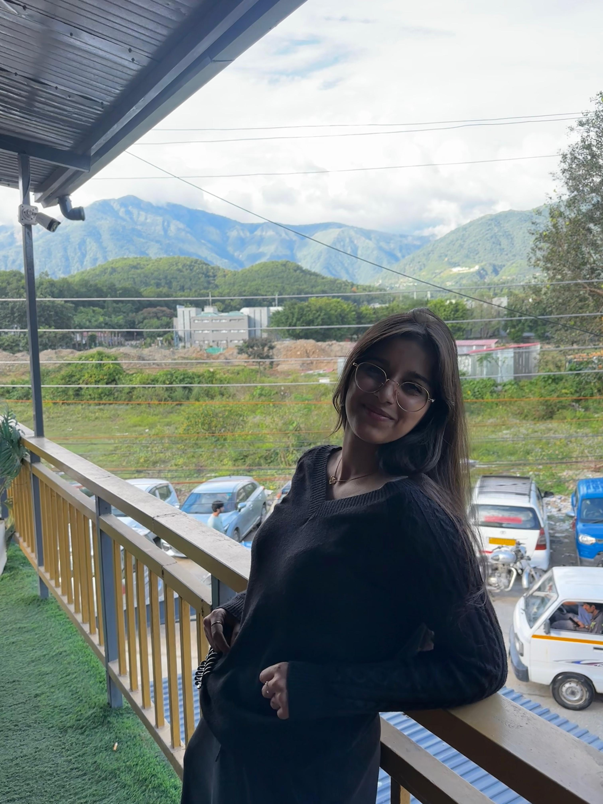

Full Stack Development Student • Freelancer • Web Developer

Hello! I'm Drishti Dagar, currently pursuing my 2nd year B.Tech in Computer Science Engineering (Specialization in Full Stack Development) at UPES.
I completed my Class 12 education under the CBSE Board in Delhi. Alongside my studies, I continuously work on improving my technical skills by building real-world projects and taking on freelance web development work.
I enjoy creating modern, responsive, and user-friendly websites while learning new technologies every day.
I believe that learning never truly ends. Every project is an opportunity to grow, solve new challenges, and become a better developer. I enjoy stepping outside my comfort zone, experimenting with new technologies, and taking on different kinds of projects that help sharpen my skills. To me, coding is more than writing lines of code—it is a craft. I treat every project with creativity, attention to detail, and a genuine passion for building meaningful digital experiences. My work reflects who I am, and I take pride in constantly improving it.